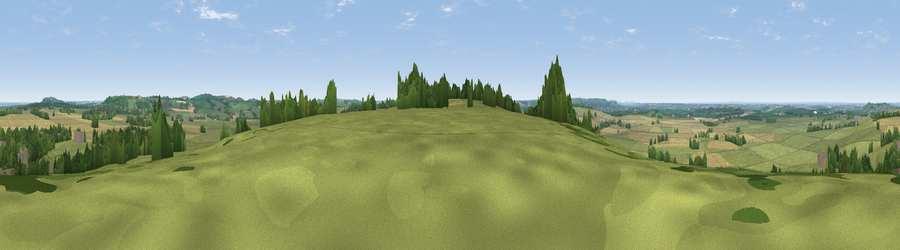

Viewpoint near Priors Hardwick
#20105 in England · top 24% of its area beats it · near Priors HardwickWhere it is
The exact computed spot (SP 47025 55625). Click the marker for map links.
The view, rendered

A 360° render of this exact spot computed from the terrain model, tree cover and land cover — summer colours, afternoon light, calibrated against photographs of famous viewpoints. Real trees, hedges and buildings will differ in detail.
The panorama
Grey silhouette: terrain skyline in each direction (720 bearings, Earth curvature and refraction included). Dashed green: skyline with trees (+15 m) and buildings (+8 m) as obstacles. Blue strip: how far the ground is visible on each bearing.
Where the view opens
Wedge length = distance to the farthest visible ground on that bearing (vegetation-aware). Rings at 10, 25 and 50 km.
What fills the view
56% grassland · 30% cropland · 12% woodland · 1% built-up
Angular shares of the visible panorama (visual magnitude), not map area. Landscape diversity 0.44 (0–1 Shannon).
Key numbers
More beautiful places nearby
The staircase of upgrades: each row has a higher view potential than everything closer. Driving times are estimates from straight-line distance, calibrated against real road routing — check an actual route before setting out.
| Place | Direction | Drive | Score |
|---|---|---|---|
| Viewpoint near Priors Marston | NE · 3 km | ~7 min | 52.7 |
| Black Down | E · 4 km | ~10 min | 64.5 |
| Viewpoint near Northend | WSW · 8 km | ~16 min | 69.7 |
| Viewpoint near Northend | WSW · 8 km | ~16 min | 70.3 |
| Viewpoint near Radway | SW · 11 km | ~21 min | 71.7 |
| Viewpoint near Ilmington | WSW · 29 km | ~46 min | 72.6 |
| Viewpoint near Meon Vale | WSW · 31 km | ~48 min | 77.0 |
| Broadway Hill | WSW · 41 km | ~60 min | 77.7 |
52.19686, -1.31342 · source: screening · position refined by local search. Computed location — check access rights before visiting.